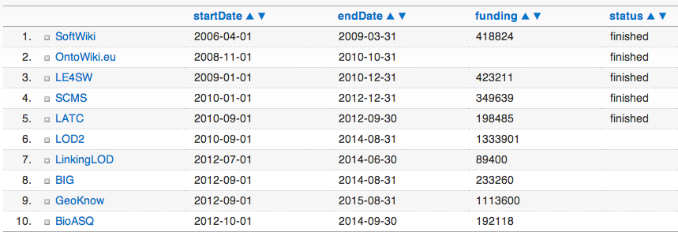
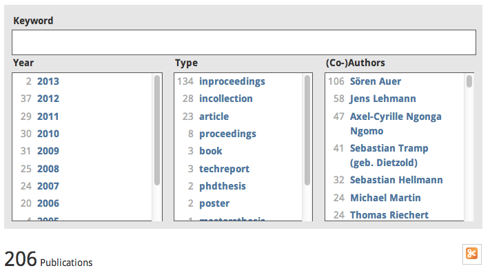

AKSW Group Presentation(Projects, sub groups, people)
Sebastian Tramp - 24.01.2013
Outline
Funding
Publications
Subgroups
- Emergent Semantics
- Semantic Abstraction
- Machine Learning and Ontology Engineering
- Collaborated and Stakeholder-driven Software Engineering
Funding

AKSW research group: funding and runtime
Publications

AKSW research group: publications
Emergent Semantics
Research Areas
- Agile Knowledge Engineering
- Linked Data
- Semantic Web Infrastructure
- Distributed Semantic Social Networks
Emergent Semantics
Projects (selection)
- LOD2 - Creating Knowledge out of Interlinked Data
- BIG – Big Data Public Private Forum
- OntoWiki - semantic linked data wiki
- DBpedia - Querying Wikipedia like a Semantic Database
- DSSN - An Architecture of a Distributed Semantic Social Network
SIMBA - Semantic Abstraction
Research Areas
- Extraction of RDF and OWL from unstructured data
- Link Discovery
- Machine Learning
- Natural Language Processing
SIMBA - Semantic Abstraction
Projects (selection)
- SCMS - Semantic Content Management Systems
- BioASQ – a challenge on large-scale biomedical semantic indexing and question answering
- FOX - Federated knOwledge eXtraction Framework
- LIMES - LInk discovery framework for MEtric Spaces
MOLE - Machine Learning and Ontology Engineering
Research Areas
- Creating knowledge bases from weakly structured data
- Quality assurance and enhancement in ontologies
- Semi-automatic instance matching
- RDF knowledge bases
MOLE - Machine Learning and Ontology Engineering
Projects (selection)
- GeoKnow – Making the Web an Exploratory for Geospatial Knowledge
- LATC - LOD Around-the-Clock
- DL-Learner - a tool for supervised Machine Learning in OWL and Description Logics
- LinkedGeoData - adds a spatial dimension to the Web of Data
- ORE - A tool for debugging and enriching OWL knowledge bases
Collaborated and Stakeholder-driven Software Engineering
Research Areas
- Agile collaborative requirements engineering
- Creation and evolution of knowledge bases from legacy databases
- Software product-line engineering
- Vocabulary alignment
Collaborated and Stakeholder-driven Software Engineering
Projects (selection)
- LOD2 - Creating Knowledge out of Interlinked Data
- SoftWiki - Semantics- and Community-Based Requirements Engineering
- Catalogus Professorum - Leipzig Professors Catalog
- Cofundos - community innovation & funding
Thank you for your Attention!
My WebID:
This slide deck:
←
→